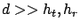
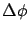

Siguiente: Propagación sobre una superficie
Subir: Propagación sobre Tierra plana
Anterior: Propagación sobre Tierra plana
Índice General
Si
 resulta
La ecuación (3.11) se conoce como la
ecuación de propagación en Tierra plana. Difiere de la
ecuación de propagación en espacio libre (3.1) en dos
aspectos importantes. En primer lugar, al asumir que
,
el ángulo
 es pequeño y  se cancela en la
ecuación (3.11), resultando independiente de la
frecuencia. En segundo lugar, se obtiene una relación inversamente
proporcional a la cuarta potencia de la distancia en lugar de una
relación inversa con el cuadrado de la misma, asemejándose más a lo
que sucede en entornos urbanos. Esto significa una disminución más
rápida de la potencia recibida con la distancia, 12dB por cada
duplicación de la misma.
Es importante notar que la ecuación (3.11)
solamente aplica en rangos donde la relación
es
válida. Cerca del transmisor, la ecuación (3.10) debe ser
utilizada y esto se traduce en mínimos y máximos alternados en la
intensidad de la señal.
La ecuación (3.11) escrita en decibeles queda:
se cancela en la
ecuación (3.11), resultando independiente de la
frecuencia. En segundo lugar, se obtiene una relación inversamente
proporcional a la cuarta potencia de la distancia en lugar de una
relación inversa con el cuadrado de la misma, asemejándose más a lo
que sucede en entornos urbanos. Esto significa una disminución más
rápida de la potencia recibida con la distancia, 12dB por cada
duplicación de la misma.
Es importante notar que la ecuación (3.11)
solamente aplica en rangos donde la relación
es
válida. Cerca del transmisor, la ecuación (3.10) debe ser
utilizada y esto se traduce en mínimos y máximos alternados en la
intensidad de la señal.
La ecuación (3.11) escrita en decibeles queda:
siendo la ``pérdida básica''
Siguiente: Propagación sobre una superficie
Subir: Propagación sobre Tierra plana
Anterior: Propagación sobre Tierra plana
Índice General
SAPO